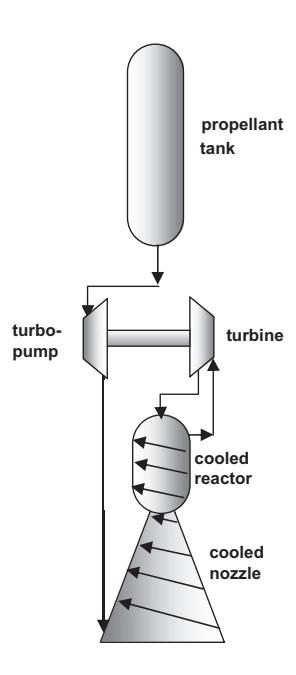
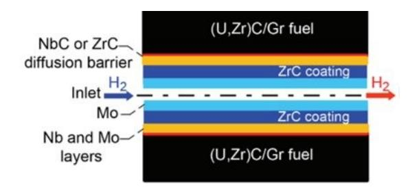
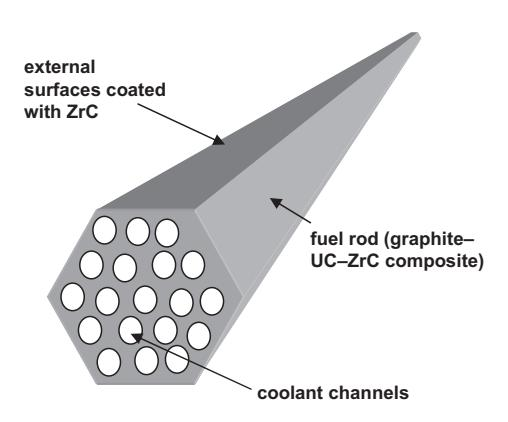

Other Projects
Research outside the core propulsion and materials science tracks.
Group Research Project
State of the Art on Nuclear Space Applications and Fuels in Nuclear Propulsion
A literature review of nuclear thermal propulsion (NTP) and nuclear electric propulsion (NEP) systems, focusing on fuel element design and materials. The review covers fuel compositions including uranium oxide, carbides, and nitrides, diffusion barrier coatings for high-temperature hydrogen environments, and reactor concepts such as ESA's DRACO program.


